S7-1200 可以作为 IO 控制器与其它智能 IO 设备进行 Profinet 通信，S7-300 PN CPU 可以做为智能 IO 设备，故可使用 S7-1200 作为控制器和 S7-300 PN CPU 进行 Profinet 通信。本例中将 S7-1200 作为控制器，连接作为智能 IO 设备的 S7-300 PN CPU 实现 Profinet 通信，下面详细介绍使用方法。
此外，本例也可以用在 S7-1200 和 S7-400 PN CPU 的 Profinet 通信（S7-1200 作为 IO 控制器）。
硬件：
软件：
S7-300 集成的 PN 接口连接 S7-1200 的 PN 接口，这种方式可以分 3 种情况来操作，具体如下：
CPU 1215C 作为 IO 控制器，CPU 315-2PN/DP 作为 IO 设备，使用 TIA Portal 在一个项目中操作，详细步骤如下。
使用 TIA Portal 创建一个新项目，并通过"添加新设备"组态 S7-1200 站 PLC_1，选择 CPU 1215C DC/DC/DC；设置 IP 地址，并确认设备名称，本示例中设备名称是 PLC_1。如图 1 所示。
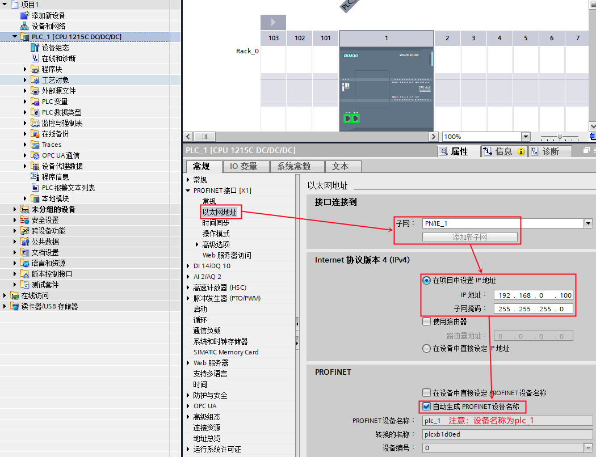
图 1. 在新项目中插入 S7-1200 站
使用 TIA Portal 创建一个新项目，并通过"添加新设备"组态 S7-300 站 PLC_2，选择 CPU 315-2PN/DP；设置 IP 地址，并确认设备名称，本示例中设备名称是 PLC_2。如图 2 所示。
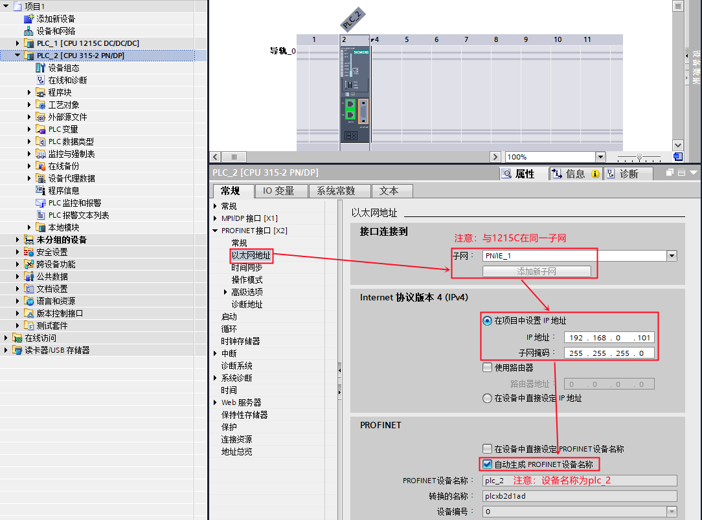
图 2. 在新项目中插入 S7-300 站
S7-300 作为 IO 设备，需要将其操作模式设置为 IO 设备，并将 IO 设备分配给控制器 PLC_1 。如图 3 所示。
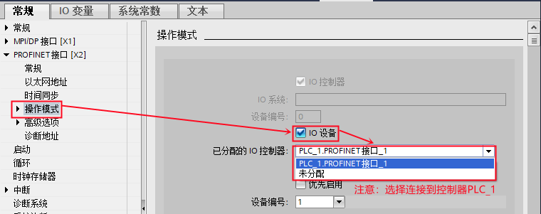
图 3. S7-300 设置为 IO 设备
然后，在"智能设备通信"的"传输区"创建 IO 通信区，控制器的 QB10~14 共计 5 个字节传送到 IO 设备的 IB10~14 ；控制器的 IB10~14 共计 5 个字节读取来自 IO 设备的 QB10~14 。如图 4 所示。
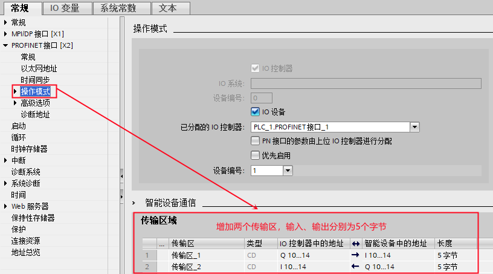
图 4. 创建 IO 通信区
1、CPU 315-2 PN/DP 作为 IO 设备，需要调用 OB83 和 OB86（防止无法正常连接作为控制器的 S7-1200 时，出现的停机现象）。如图 5 所示。
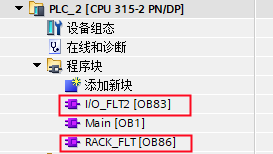
图 5. OB
2、检查无错误后，分别将 PLC_1 站和 PLC_2 站下载到各自的 PLC 中。
分别给两个站点新建监控表，添加通信数据区，监控。如图 6 所示。
图 6. 通信测试
CPU 1215C 作为 IO 控制器，CPU 315-2PN/DP 作为 IO 设备，使用 TIA Portal 在不同项目中操作，详细步骤如下。
使用 TIA Portal 创建一个新项目，并通过"添加新设备"组态 S7-300 站，选择 CPU 315-2PN/DP，设置 IP 地址，并确认设备名称，本示例中设备名称是 io-device。如图 7 所示。
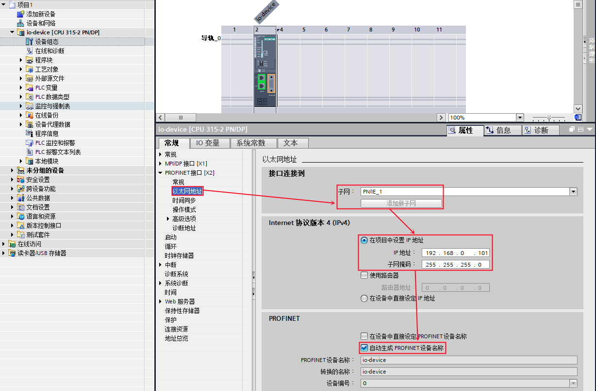
图 7. 在新项目中插入 S7-300 站
S7-300 作为 IO 设备，需要将其操作模式设置为 IO 设备。接着，在"智能设备通信"的"传输区"创建 IO 通信区，控制器将传输 5 个字节到 IO 设备的 IB10~14；IO 设备将 QB10~14 共计 5 个字节传送给控制器。如图 8 所示。
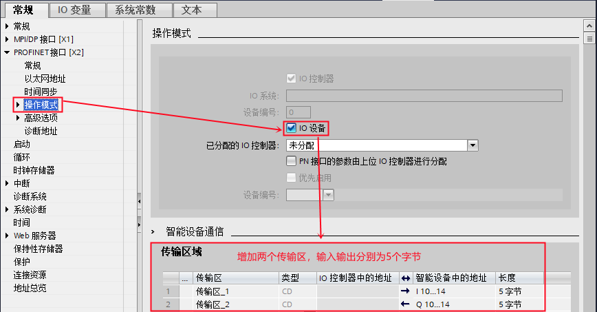
图 8. S7-300 设置为 IO 设备，并创建 IO 通信区
编译该项目，在"智能设备通信"属性的下方，找到并点击"导出"按钮，根据提示将 GSD 文件导出（注意不要修改设备名称）。如图 9 所示。
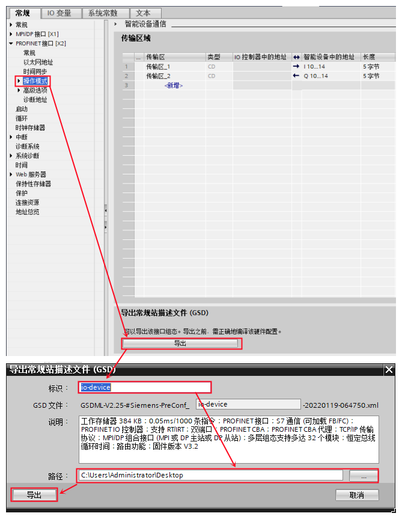
图 9. 导出 IO 设备的 GSD 文件
使用 TIA Portal 创建一个新项目，并组态 CPU 1215C DC/DC/DC，设置 IP 地址，并确认设备名称，本示例中设备名称是 PLC_1。如图 10 所示。
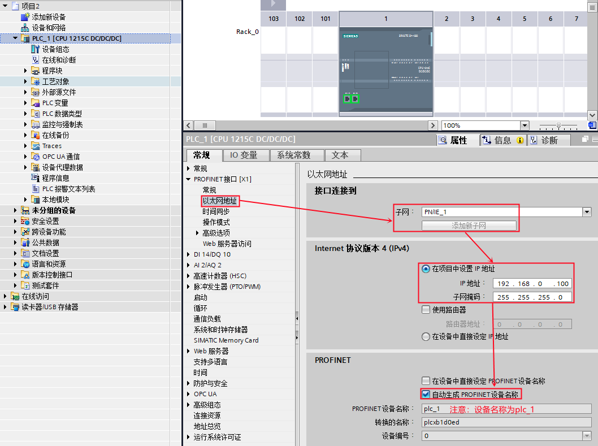
图 10. 在新项目中插入 S7-1200 站
在 TIA Portal 的硬件组态界面，通过"选项"进入"管理通用站描述文件（GSD）"界面， 在源路径选择 IO 设备 的 GSD 文件存放路径。如图 11 所示。
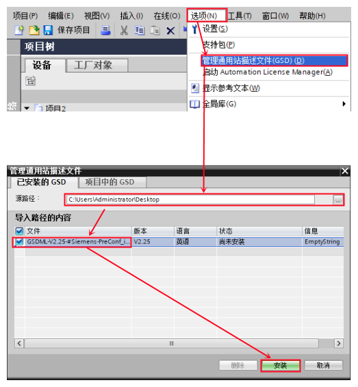
图 11. TIA Portal 安装 IO 设备 的 GSD 文件
在 TIA Portal 的硬件组态界面，将硬件目录路径：Other field devices--（其它现场设备）> PROFINET IO-->PLCs&CPs-->SIEMENS AG--> CPU 315-2PN/DP --> io-device 拖拽到网络视图中。如图 12 所示。
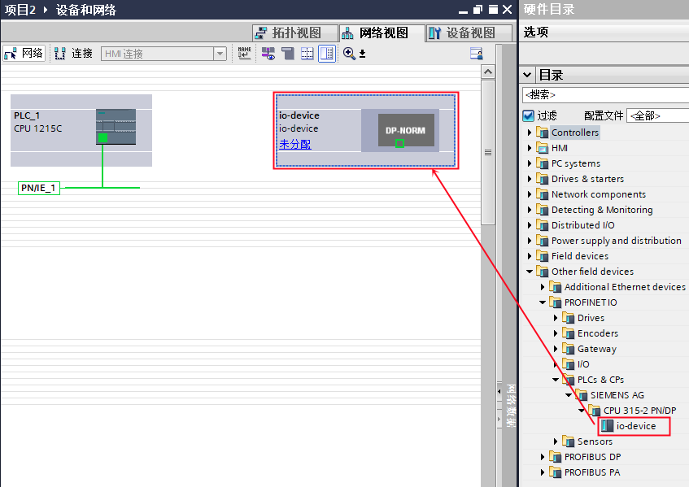
图 12. 组态 IO 设备
然后为 IO 设备分配 IO 控制器，如图 13 所示。
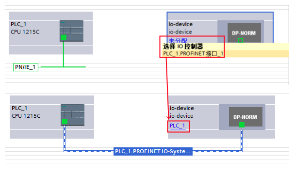
图 13. 分配 IO 控制器
进入到设备视图中的设备概览设置传输区地址，如图 14 所示。
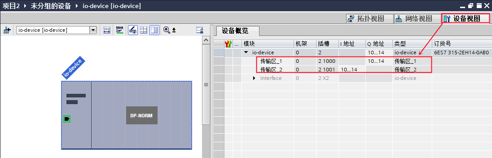
图 14. 分配传输区地址
1、CPU 315-2 PN/DP 作为 IO 设备，需要调用 OB83 和 OB86（防止无法正常连接作为控制器的 S7-1200 时，出现的停机现象）；如图 15 所示。
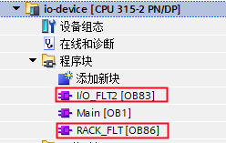
图 15. OB
2、检查无错误后，分别将 S7-300 站和 S7-1200 站下载到各自的 PLC 中。
分别给两个站点新建监控表，添加通信数据区，监控。如图 16 所示。
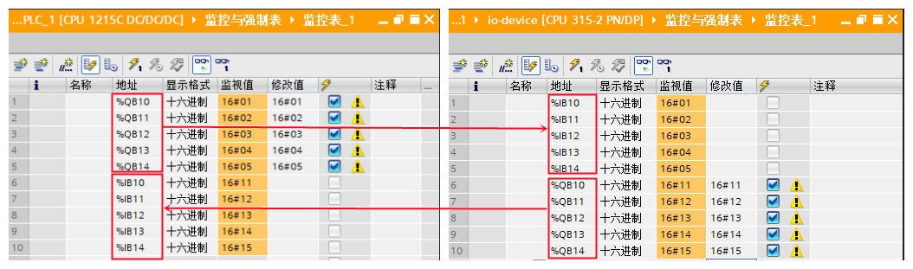
图 16. 通信测试
CPU 1215C作为 IO 控制器， CPU 315-2PN/DP 作为 IO 设备，CPU 1215C 使用 TIA Portal ，而 CPU 315 使用 Step7，详细步骤如下。
使用 STEP7 创建一个新项目，并通过"添加新设备"组态 S7-300 站 IO 设备，选择 CPU 315-2PN/DP；设置 IP 地址，并确认设备名称，本示例中设备名称是 PN-IO。如图 17 所示。
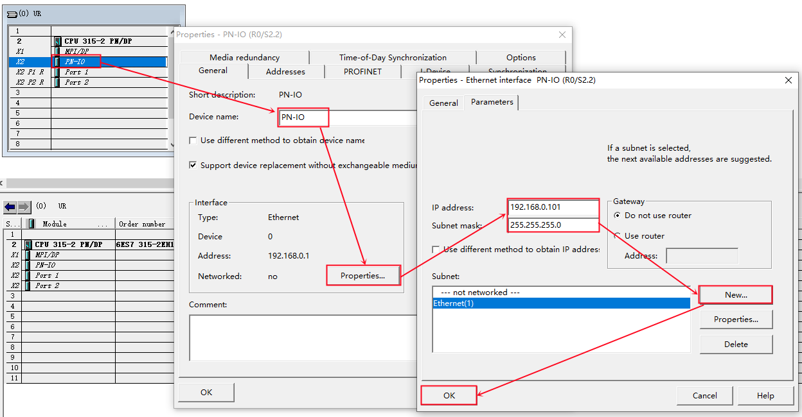
图 17. 在新项目中插入 S7-300 站
S7-300 作为 IO 设备，需要将其操作模式设置为 IO 设备。接着，在"智能设备通信"的"传输区"创建 IO 通信区，控制器将传输 5 个字节到 IO 设备的 IB10~14 ；IO 设备将 QB10~14 共计 5 个字节传送给控制器。如图 18 所示。
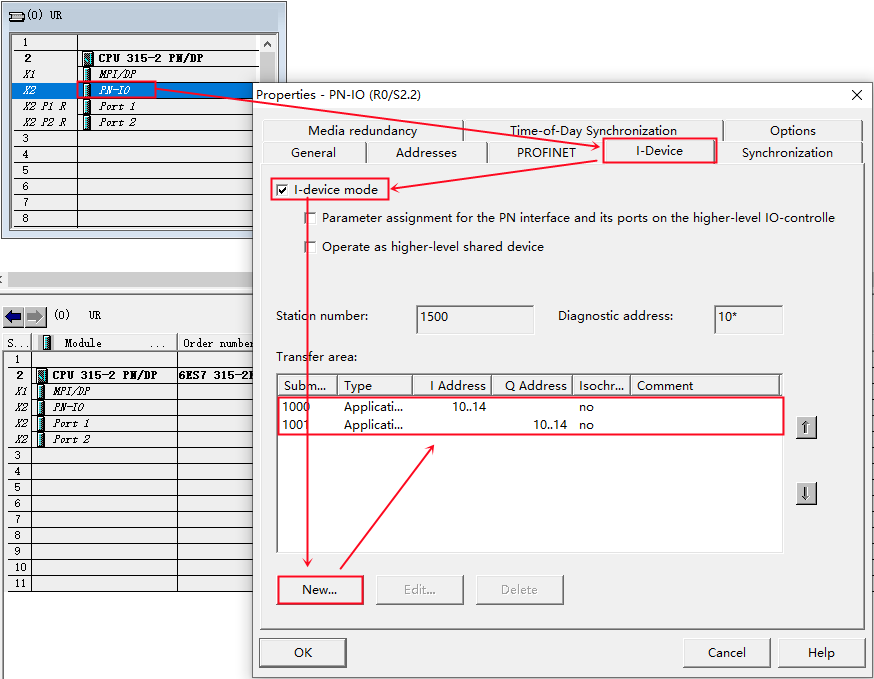
图 18. S7-300 设置为 IO 设备，并创建 IO 通信区
编译该项目，在"智能设备通信"属性的下方，找到并点击"导出"按钮，根据提示将 GSD 文件导出（注意不要修改设备名称）。如图 19 所示。
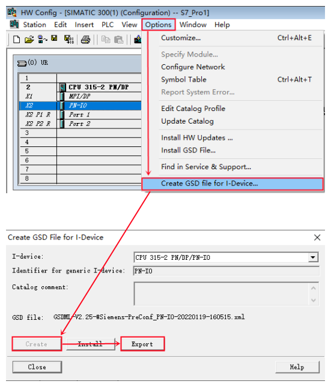
图 19. 导出 IO 设备的 GSD 文件
使用 TIA Portal 创建一个新项目，并组态 CPU 1215C DC/DC/DC，设置 IP 地址，并确认设备名称，本示例中设备名称是 PLC_1。如图 20 所示。
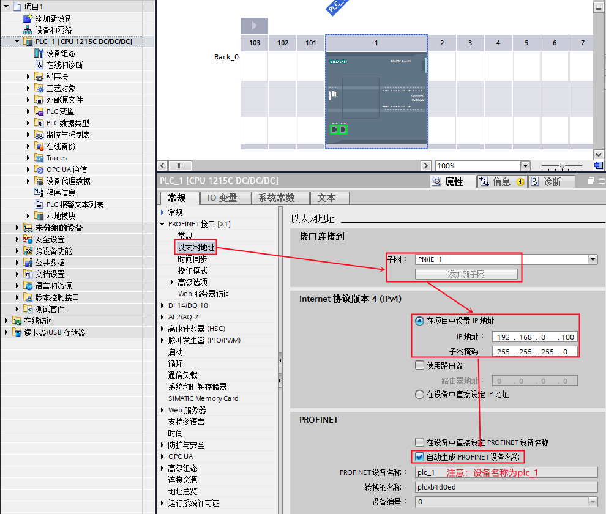
图 20. 在新项目中插入 S7-1200 站
在 TIA Portal 的硬件组态界面，通过"选项"进入"管理通用站描述文件（GSD）"界面， 在源路径选择 IO 设备 的 GSD 文件存放路径。如图 21 所示。
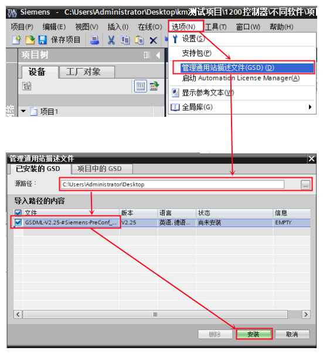
图 21. TIA Portal 安装 IO 设备的 GSD 文件
在 TIA Portal 的硬件组态界面，将硬件目录路径：Other field devices（其它现场设备）--> PROFINET IO-->PLCs&CPs-->SIEMENS AG--> CPU 315-2PN/DP --> PN-IO拖拽到 网络视图中。如图 22 所示。
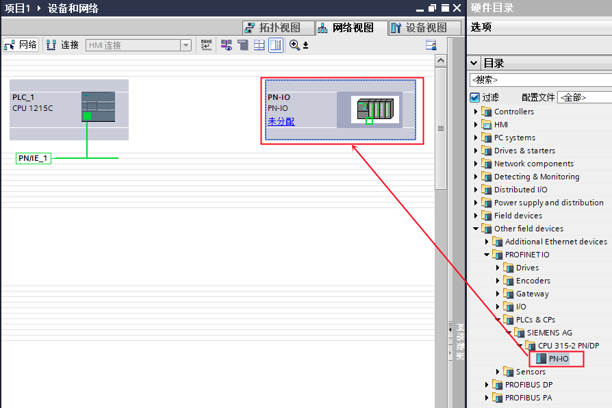
图 22. 组态 IO 设备
然后为 IO 设备分配 IO 控制器，如图 23 所示。
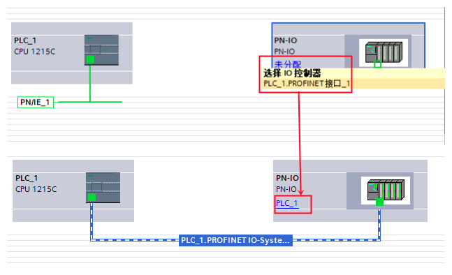
图 23. 分配 IO 控制器
进入到设备视图中的设备概览设置传输区地址，如图 24 所示。
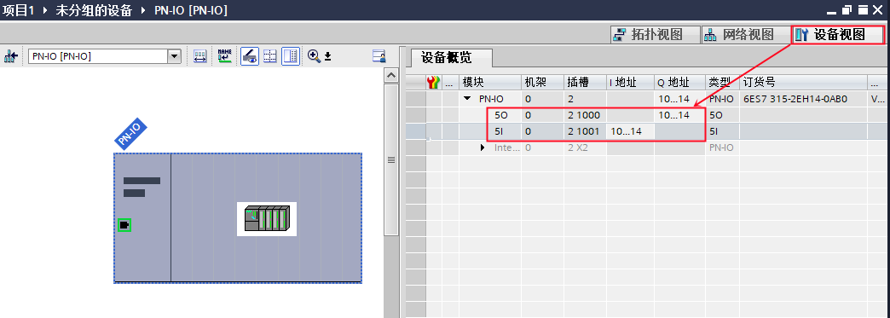
图 24. 分配传输区地址
1、CPU 315-2 PN/DP 作为 IO 设备，需要调用 OB83 和 OB86（防止无法正常连接作为控制器的 S7-1200 时，出现的停机现象）；如图 25 所示。
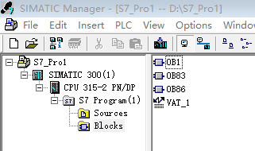
图 25. OB
2、检查无错误后，分别将 S7-300 站和 S7-1200 站下载到各自的 PLC 中。
分别给两个站点新建监控表，添加通信数据区，监控。如图 26 所示。
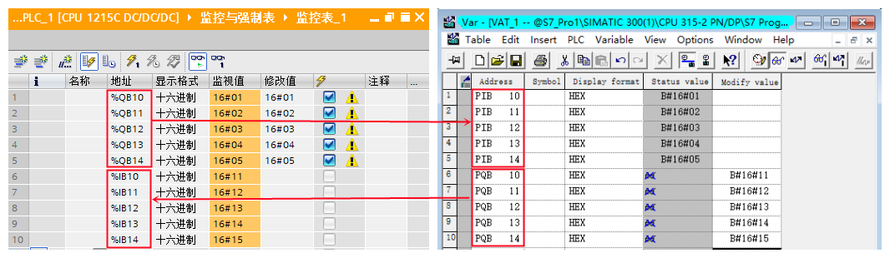
图 26. 通信测试